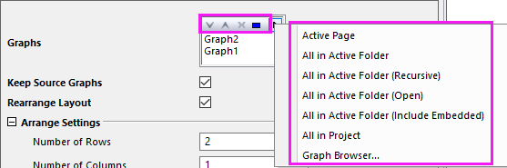

FAQ-139 Kann ich mehrere Diagrammfenster zu einem zusammenfügen?
MergeGraphs
Letztes Update: 28.06.2022
Ja, klicken Sie auf der Symbolleiste auf Zusammenfügen  , die sich auf der rechten Seite des Arbeitsbereichs befindet, oder wählen Sie Grafik: Diagrammfenster zusammenfügen, um mehrere Diagramme in einer Grafik zusammenzufügen. Aktivieren Sie bei eingebetteten Diagrammen das Blatt, das die eingebetteten Diagramme enthält. Wählen Sie Bearbeiten: (Eingebettete) Diagramme zusammenfügen.
, die sich auf der rechten Seite des Arbeitsbereichs befindet, oder wählen Sie Grafik: Diagrammfenster zusammenfügen, um mehrere Diagramme in einer Grafik zusammenzufügen. Aktivieren Sie bei eingebetteten Diagrammen das Blatt, das die eingebetteten Diagramme enthält. Wählen Sie Bearbeiten: (Eingebettete) Diagramme zusammenfügen.
- Verwenden Sie im Feld Diagramm die Schaltflächen Nach oben bzw. Nach unten verschieben, um die Diagrammreihenfolge anzuordnen, oder verwenden Sie das Menü, um Diagramme auszuwählen.
- 
- Klicken Sie bei Bedarf auf die Schaltfläche "Vorschau" oder aktivieren Sie das Kontrollkästchen "Automatische Vorschau", um die aktualisierte Vorschau anzuzeigen.
- Legen Sie die Anzahl der Zeilen und Spalten in der zusammengefügten Grafik fest. Hinweis: Sie können sie auf 1x1 festlegen, so dass die Diagramme sich überschneiden.
- Durch Aktivieren von Quelldiagramme verknüpfen werden die Diagramme in der sich ergebenden Grafik verknüpft, so dass, wenn Sie die Größe später ändern oder einen Layer verschieben, die anderen ihre Größe ebenfalls ändern und zusammen verschoben werden.
- Verwenden Sie Beschriftungen hinzufügen in jedem Diagramm.
- Nach dem Zusammenfügen können Sie Legenden aktualisieren, so dass alle Legenden in einem Feld kombiniert sind:
- Klicken Sie mit der rechten Maustaste auf die Legende und wählen Sie Legende: Legende aktualisieren.
- Setzen Sie den Aktualisierungsmodus auf Rekonstruieren und die Legende auf eine Legende für gesamte Seite und klicken Sie auf OK.
- Halten Sie die Strg-Taste gedrückt und ziehen Sie an der Kante der Legende, um sie neu anzuordnen.

Manchmal kann der Dialog Grafikfenster zusammenfügen auf Grund der Vorschaufunktion langsam sein, wenn Sie viele Diagrammfenster in Ihrem Projekt haben. In diesem Fall kann es schneller sein, wenn Sie den Dialog nicht öffnen, sondern von der Befehlszeile aus zusammenfügen.
Um dies zu tun, folgen Sie diesen Schritten:
- Erstellen Sie einen neuen Ordner im Projekt Explorer, indem Sie auf die Schaltfläche Neuer Ordner in der Standardsymbolleiste klicken.
- Verschieben Sie die Diagramme, die Sie zusammenfügen möchten, in diesen Ordner und stellen Sie sicher, dass alle geöffnet sind (sichtbar und nicht verborgen). (Verwenden Sie den Projekt Explorer, um Diagramme von einem Ordner in einen anderen zu verschieben.)
- Wählen Sie Fenster: Befehlsfenster und geben Sie Folgendes ein: merge_graph.
- Drücken Sie Enter und es wird ein neues Fenster erstellt, welches die Diagramme aus allen anderen Fenstern enthält.
- Optional: Falls Sie nach dem Zusammenfügen die Layer neu anordnen möchten, können Sie den Dialog Layerverwaltung über das Menü Grafik: Layerverwaltung öffnen.
Schlüsselwörter:Layer, einzeln, Seite